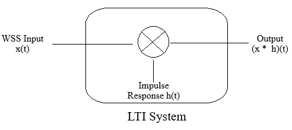

Instructions for Wide Sense Stationary Simulator when the system is LTI
Step 1: Click on "Generate WSS" to generate a wide-sense stationary (WSS) signal, whose mean and autocorrelation do not change over time.
Step 2: You may also choose "Noisy Sinusoid" from the input type dropdown.
Step 3: Click on "Plot CIR" to generate the LTI filter coefficients.
Step 4: Click on "Generate Output" to produce the output signal after filtration.
Step 5: You can see the auto-correlation plot by clicking the "Calculate Auto-correlation" button.
Number of Samples:
Mean:
Variance:
Channel Impulse Response:
Choose Input Type:
WSS
Noisy Sinusoid
Amplitude:
Frequency (Hz):

Generate WSS
Input Real Data
Plot CIR
Generate Output
Calculate Auto-correlation
Upload CSV and See Output
Channel Impulse Response
Channel Impulse Response
Output